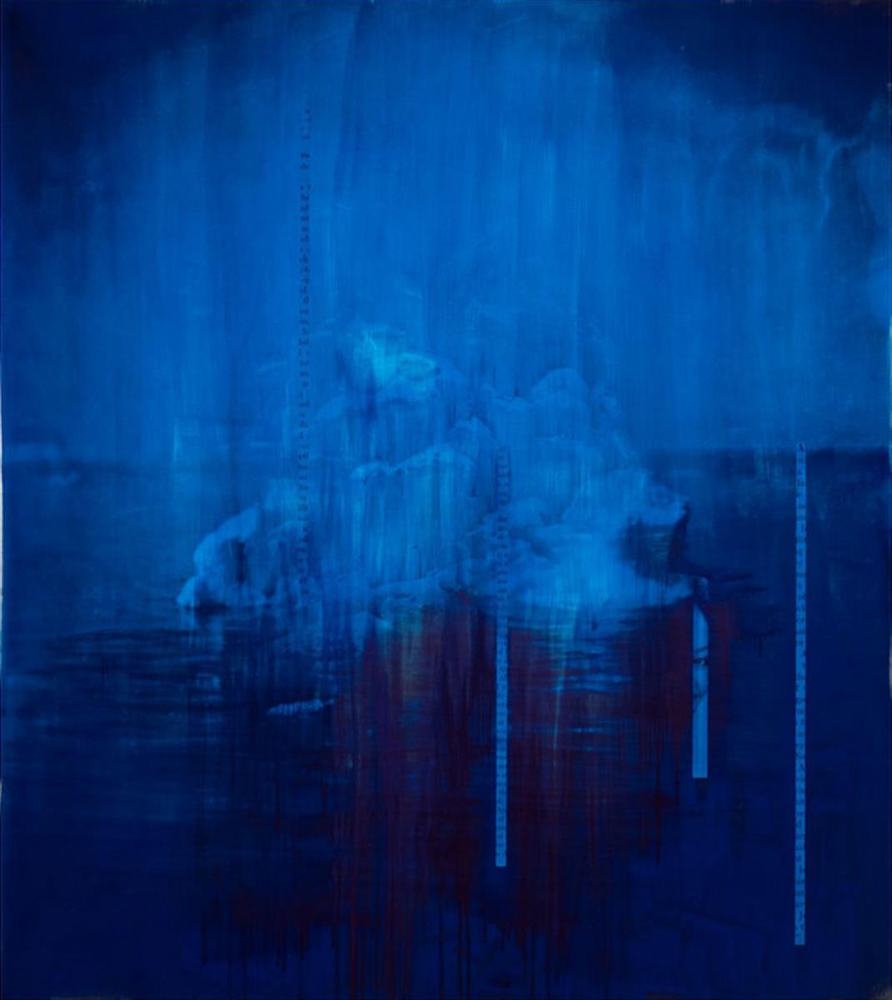
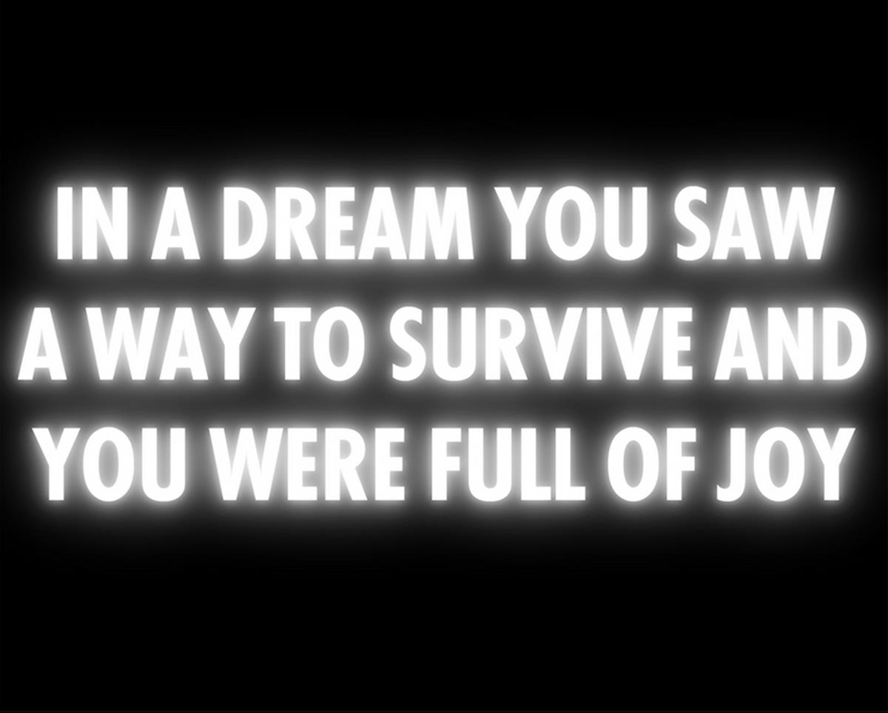
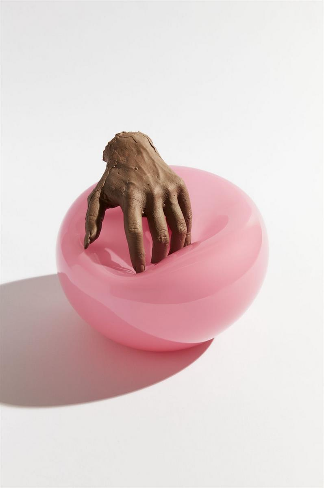
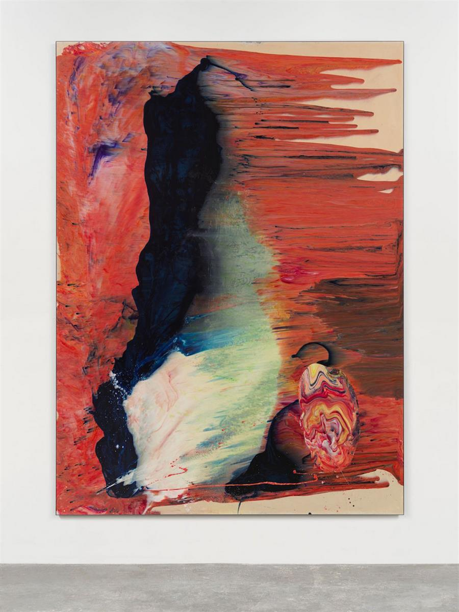

Jack Pierson, Inquire Within (2020). Image courtesy of the artist and Regen Projects.
SOURCE: ARTNET NEWS
The Swiss Institute, White Columns, and a host of other institutions will benefit from the sale.
Eileen Kinsella, September 10, 2020
A few weeks into New York City’s shutdown earlier this year, Hauser & Wirth president Marc Payot came to feel that there would never be a return to “business as usual” for galleries, nor for the smaller—and harder-hit—nonprofits that give the city its verve.
That got him thinking, he says, about the crucial role that many of those smaller nonprofit institutions play in supporting artists and the art community.

Lorna Simpson, Haze (2019). Photo by James Wang. Image courtesy the artist and Hauser & Wirth.
Payot’s conversations with gallery co-presidents Iwan and Manuela Wirth, and then with a wider circle of the city’s institutional leaders, quickly grew into a solid plan. On October 1, the gallery will launch “Artists for New York,” a fundraiser featuring works by more than 100 artists.
Net proceeds will be divided equally between Artists Space; the Bronx Museum of the Arts; the Dia Art Foundation; the Drawing Center; El Museo del Barrio; High Line Art; MoMA PS1; the New Museum; the Public Art Fund; the Queens Museum; SculptureCenter; the Studio Museum in Harlem; the Swiss Institute; and White Columns.
Since Hauser & Wirth first opened in New York in 2009, these organizations “have become our community,” Payot says.
“Through years of adventurous programs with living artists, these 14 bellwether nonprofits have expanded awareness and understanding of society’s complexities and potential,” he says. “They’ve introduced us to new art and new ways of thinking, they’ve enriched all of our lives.”

Jenny Holzer. from Survival 1983-85, (2020). © 2020 Jenny Holzer, member Artist Rights Society (ARS). Photo: Graham Kelman
In addition, two more nonprofit that give money to institutions around the city—the Foundation for Contemporary Arts (FCA), which was founded by John Cage and Jasper Johns to support individual artists, groups, and organizations; and the Mayor’s Fund to Advance New York City, which works with business leaders and philanthropists to help New Yorkers in need—will share a portion of the proceeds.
Eighty percent of the proceeds will go to the fourteen art nonprofits, while FCA and the Mayor’s Fund will each get 10 percent. Hauser & Wirth, which will be exhibiting some of the works on sale at its two Manhattan galleries, will not take any share of the proceeds.
“Every cultural institution, at every scale in New York City, has been hit hard by COVID-19, each in its own way,” Thelma Golden, director and chief curator of the Studio Museum in Harlem, told Artnet news in an email.
At her own institution, “the disruption that the pandemic has caused has been felt deeply, forcing us to pause construction on our new building, curtailing programing at our Studio 127 space, causing our artists-in-residence to relocate into separate off-site studios, and more.”

Kelly Akashi, Feel Me (Flesh) (2020). Image courtesy the artist, Tanya Bonakdar Gallery, New York and François Ghebaly Gallery, Los Angeles.
Patrick Charpenel, the executive director of El Museo del Barrio, says the museum is “not only concerned about the alarming and disproportionate rate of Latinos impacted by COVID-19, but also the potential long-term financial impact this will have on staffing and programming.”
Charpenel says the “incredibly generous” fundraiser will subsidize revenue lost from the cancellation of El Museo’s annual gala, its biggest money-maker of the year.
“I hope this is an inspiring example of how to galvanize art collectors to support cultural institutions,” he adds.
Similarly, Bronx Museum interim director Klaudio Rodriguez says the museum has been reeling from the economic fallout.
“We have lost the ability to support ourselves through our earned income, as we will not be able to host galas and other types of in-person fundraisers or rent our spaces,” Rodriguez says. “This is why this idea from Hauser & Wirth has the potential to make a great impact.”

Ryan Sullivan, Untitled (2019). © Ryan Sullivan. Image courtesy the artist and Sadie Coles HQ, London.
“I think artists, at all stages of their careers, perhaps best understand the economic complexities and contradictions of the art world,” says Matthew Higgs, the director of White Columns.
“Artists also have perhaps the clearest sense of the interconnectedness of the different art worlds, and an understanding that the current art world isn’t a monolithic entity, but rather it has evolved, and continues to evolve, organically from the collective enterprise of generations of artists and artist-led nonprofit organizations.”
SOURCE: ARTNET NEWS